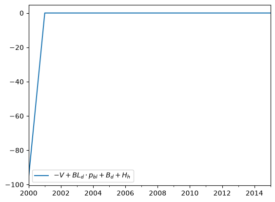
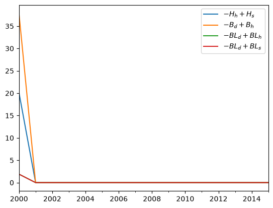

from nbdev.showdoc import show_docRepresentations
Classes to abstractly represent your model, for easier manipulation and equation generation
These are optional, but can be helpful if you’re going to do a lot of manipulations or plotting based on the SFC matrices for your model.
For this page, we’ll work with Godley/Lavoie’s model LP as an example:
Variable.default_value = 0
Bcb = Variable('B_{cb}','Government bills held by the Central Bank')
Bd = Variable('B_d','Demand for government bills')
Bh = Variable('B_h','Government bills held by households')
Bs = Variable('B_s','Government bills supplied by government')
BLd = Variable('BL_d','Demand for government bonds')
BLh = Variable('BL_h','Government bonds held by households')
BLs = Variable('BL_s','Supply of government bonds')
CG = Variable('CG','Capital gains on bonds')
CGe = Variable('CG^e','Expected capital gains on bonds')
C = Variable('C','Consumption')
ERrbl = Variable('ERr_{bl}','Expected rate of return on bonds')
Hd = Variable('H_d','Demand for cash')
Hh = Variable('H_h','Cash held by households')
Hs = Variable('H_s','Cash supplied by the central bank')
Pbl = Variable('p_{bl}','Price of bonds')
Pble = Variable('p_{bl}^e','Expected price of bonds')
Rb = Variable('r_b','Interest rate on government bills')
Rbl = Variable('r_{bl}','Interest rate on government bonds')
T = Variable('T','Taxes')
V = Variable('V','Household wealth')
Ve = Variable('V^e','Expected household wealth')
Y = Variable('Y','Income = GDP')
YDr = Variable('YD_r','Regular disposable income of households')
YDre = Variable('YD_r^e','Expected regular disposable income of households')
Parameter.default_value = 0
alpha1 = Parameter('alpha_1', 'Propensity to consume out of income')
alpha2 = Parameter('alpha)2', 'Propensity to consume out of wealth')
chi = Parameter('chi', 'Weight of conviction in expected bond price')
lambda10 = Parameter('lambda_{10}', 'Parameter in asset demand function')
lambda12 = Parameter('lambda_{12}', 'Parameter in asset demand function')
lambda13 = Parameter('lambda_{13}', 'Parameter in asset demand function')
lambda14 = Parameter('lambda_{14}', 'Parameter in asset demand function')
lambda20 = Parameter('lambda_{20}', 'Parameter in asset demand function')
lambda22 = Parameter('lambda_{22}', 'Parameter in asset demand function')
lambda23 = Parameter('lambda_{23}', 'Parameter in asset demand function')
lambda24 = Parameter('lambda_{24}', 'Parameter in asset demand function')
lambda30 = Parameter('lambda_{30}', 'Parameter in asset demand function')
lambda32 = Parameter('lambda_{32}', 'Parameter in asset demand function')
lambda33 = Parameter('lambda_{33}', 'Parameter in asset demand function')
lambda34 = Parameter('lambda_{34}', 'Parameter in asset demand function')
theta = Parameter('theta', 'Tax rate')
G = Parameter('G', 'Government goods')
Rbar = Parameter('\\bar{r}_b', 'Exogenously set interest rate on govt bills')
Pblbar = Parameter('\\bar{P}_{bL}', 'Exogenously set price of bonds')
model = SFCmodel(
[
Y << C + G,
YDr << Y - T + Rb(-1)*Bh(-1) + BLh(-1),
T << theta *(Y + Rb(-1)*Bh(-1) + BLh(-1)),
d(V) << (YDr - C) + CG,
CG << (Pbl - Pbl(-1))*BLh(-1),
C << alpha1*YDre + alpha2*V(-1),
Ve << V(-1) + (YDre - C) + CG,
Hh << V - Bh - Pbl*BLh,
Hd << Ve - Bd - Pbl*BLd,
Bd << Ve*lambda20 + Ve*lambda22*Rb - Ve*lambda23*ERrbl - lambda24*YDre,
BLd << (Ve*lambda30 - Ve*lambda32*Rb + Ve*lambda33*ERrbl - lambda34*YDre)/Pbl,
Bh << Bd,
BLh << BLd,
d(Bs) << (G + Rb(-1)*Bs(-1) + BLs(-1)) - (T + Rb(-1)*Bcb(-1)) - (BLs - BLs(-1))*Pbl,
d(Hs) << Bcb - Bcb(-1),
Bcb << Bs - Bh,
BLs << BLh,
ERrbl << Rbl + chi * (Pble - Pbl) / Pbl,
Rbl << 1./Pbl,
Pble << Pbl,
CGe << chi * (Pble - Pbl)*BLh,
YDre << YDr(-1),
Rb << Rbar,
Pbl << Pblbar,
],
redundant_equation = Hs << Hh
)
model[:] = {
alpha1: 0.8,
alpha2: 0.2,
chi: 0.1,
lambda20: 0.44196,
lambda22: 1.1,
lambda23: 1,
lambda24: 0.03,
lambda30: 0.3997,
lambda32: 1,
lambda33: 1.1,
lambda34: 0.03,
theta: 0.1938
}
model[:] = {G: 20,
Rbar: 0.03,
Pblbar: 20}
model[:] = {V: 95.803,
Bh: 37.839,
Bs: 57.964,
Bcb: 57.964 - 37.839,
BLh: 1.892,
BLs: 1.892,
Hs: 20.125,
YDr: 95.803,
Rb: 0.03,
Pbl: 20}
model.solve(15, redundant_tol=1e-4);Sector
def Sector(
NW:Term | None=None, name:NoneType=None
):Represents an economic sector, such as Households or Firms.
Create one Sector for each column in your balance sheet and transactions flow matrices.
Production = Sector()
Government = Sector()
CB = Sector()They don’t need any information, but you can optionally supply a Net Worth variable if one explicitly exists in the model.
Households = Sector(NW=V)Asset
def Asset(
supplies:dict[Sector | str, Variable]=None, demands:dict[Sector | str, Variable]=None,
total_supply:Term | None=None, total_demand:Term | None=None, issuer:Sector | None=None,
price:Term | sp.Expr | sp.Number | float=1, payout:Callable[[Variable], sp.Expr | Term | sp.Number] | None=None,
name:NoneType=None
):Represent an asset, real or financial.
The supplies and demands fields should be dictionaries where the keys are Sectors and the values are the Variables from your model that represent the supply/demand for that asset from that sector. If it’s a financial asset, the issuer should be the sector who the claim is against (the liability or equity share), or None if it’s a real asset.
Money = Asset(
issuer = CB,
supplies = {
Households:Hs
},
demands = {
Households:Hh
# Note that this model has Hd which is the demand for money before the period, i.e. not identically eqal to Hs, so shouldn't be used here
},
)When there are multiple sectors holding the asset, use "Total" to indicate this variable, as in the examples below.
Also, you can optionally provide a payout function. This function will take in one of the relevant Variables (such as Bd here), and should return an expression that indicates what interest payments it makes.
Bills = Asset(
issuer = Government,
demands = {
Households: Bd,
CB: Bcb
},
supplies = {
Households:Bh,
},
total_supply = Bs,
payout = lambda var: Rb(-1) * var(-1) # lagged, since bills pay based on previous period's holdings and rates
)If an asset has a price, include that in the price field:
Bonds = Asset(
issuer = Government,
demands = {
Households: BLd
},
supplies = {
Households: BLh,
},
total_supply = BLs,
price = Pbl,
payout = lambda var: var(-1) # bonds here pay $1 per unit bought last period
)To quickly check if a variable or sector appears on the supplies or demands for this asset, use in:
Bd in BillsTrueGovernment in BillsFalseAsset.payout_to
def payout_to(
sector:Sector
)->sp.Expr | Term | sp.Number:Returns an expression representing the payout to the specified sector, from the payout function. (Checks supplies first, then demands.)
Bills.payout_to(CB)\(\displaystyle B_{cb,-1} r_{b,-1}\)
And returns 0 if the sector doesn’t hold the asset:
Bonds.payout_to(CB)\(\displaystyle 0\)
Asset.sector_zero_expression
def sector_zero_expression(
sector:Sector | str
)->sp.Expr | None:Returns the supply minus demand for a sector, but only if there are variables for both. Use ‘total’ to get total_supply - total_demand
Bills.sector_zero_expression(Households)\(\displaystyle - B_{d} + B_{h}\)
Use with solve_for to generate equations:
solve_for(Bonds.sector_zero_expression(Households), BLh)\(\displaystyle BL_{h} = BL_{d}\)
Asset.sector_zero_expressions
def sector_zero_expressions()->list[sp.Expr | None]:Returns list of all sector zero expressions.
Bonds.sector_zero_expressions()\(\displaystyle \left[ - BL_{d} + BL_{h}, \ - BL_{d} + BL_{s}\right]\)
Asset.market_zero_expression
def market_zero_expression(
demand_or_supply:str='supply'
)->sp.Expr | None:If demand_or_supply == ‘supply’, returns total_supply minus supply for each sector. If demand_or_supply == ‘demand’ returns total_demand minus demand for each sector. Uses opposite term if none is available for that sector.
Bills.market_zero_expression('supply')\(\displaystyle - B_{h} - B_{cb} + B_{s}\)
Use with solve_for to create equations:
solve_for(Bills.market_zero_expression(), Bcb)\(\displaystyle B_{cb} = - B_{h} + B_{s}\)
BSmatrix
def BSmatrix(
sectors:list[Sector], assets:list[Asset]
):Representation of Balance Sheet matrix, bringing Sectors and Assets together.
bs = BSmatrix(
sectors = [Households, Production, Government, CB],
assets = [Money, Bills, Bonds]
)BSmatrix.assets
def assets(
sector:Sector
)->list[Variable]:Returns a list of the assets for the specified sector (looks in demands first, then supplies).
bs.assets(Households)\(\displaystyle \left[ H_{h}, \ B_{d}, \ BL_{d}\right]\)
BSmatrix.asset_values
def asset_values(
sector:Sector
)->list[sp.Expr | Variable]:Returns a list of the values of the assets (asset times price) for the specified sector. (Looks in demand first, then supplies.)
bs.asset_values(Households)\(\displaystyle \left[ H_{h}, \ B_{d}, \ BL_{d} p_{bl}\right]\)
Use sum to quickly get the asset side of a sector’s balance sheet:
sum(bs.asset_values(Households))\(\displaystyle BL_{d} p_{bl} + B_{d} + H_{h}\)
BSmatrix.liabilities
def liabilities(
sector:Sector
)->list[sp.Expr | Variable]:Returns list of liabilities for the specified sector. First uses ‘Total’ supply, but adds for each sector if that’s not present.
bs.liabilities(Government)\(\displaystyle \left[ B_{s}, \ BL_{s}\right]\)
BSmatrix.liability_values
def liability_values(
sector:Sector
)->list[sp.Expr | Variable]:Returns list of the values of the liabilities (asset times price) for the specified sector.
bs.liability_values(Government)\(\displaystyle \left[ B_{s}, \ BL_{s} p_{bl}\right]\)
Use sum to quickly get the liability side of the balance sheet:
sum(bs.liability_values(Government))\(\displaystyle BL_{s} p_{bl} + B_{s}\)
BSmatrix.net_worth
def net_worth(
sector:Sector
)->Variable | sp.Expr:Returns the net worth variable for the sector if there is one, otherwise sums assets minus liabilities.
bs.net_worth(Households)\(\displaystyle V\)
bs.net_worth(CB)\(\displaystyle - H_{s} + B_{cb}\)
BSmatrix.sector_zero_expression
def sector_zero_expression(
sector:Sector
)->sp.Expr:Returns sum of assets minus sum of liabilities minus net worth for a sector. (Note: will return zero if there’s no NW variable defined on the sector.)
bs.sector_zero_expression(Households)\(\displaystyle - V + BL_{d} p_{bl} + B_{d} + H_{h}\)
This can be useful to use as a key to ModelResults, to check that you get zero, i.e. that the balance sheet balances in your simulation results.
model.data[bs.sector_zero_expression(Households)].plot()
Or use with solve_for to generate equations:
solve_for(bs.sector_zero_expression(Households), Hh)\(\displaystyle H_{h} = - B_{d} - BL_{d} p_{bl} + V\)
But don’t forget that you will get identically zero if there’s no NW Variable defined in the Sector:
bs.sector_zero_expression(Government)\(\displaystyle 0\)
BSmatrix.sector_zero_expressions
def sector_zero_expressions()->list[sp.Expr]:Returns a list of zero expressions for all sectors, but only ones with NW variables defined on the sector.
bs.sector_zero_expressions()\(\displaystyle \left[ - V + BL_{d} p_{bl} + B_{d} + H_{h}\right]\)
Feed this as a key to ModelResults in order to check balance sheet identities for all sectors at once.
BSmatrix.asset_zero_expressions
def asset_zero_expressions()->list[sp.Expr]:Returns asset supply minus demand for all assets in the balance sheet.
bs.asset_zero_expressions()\(\displaystyle \left[ - H_{h} + H_{s}, \ - B_{d} + B_{h}, \ - BL_{d} + BL_{h}, \ - BL_{d} + BL_{s}\right]\)
Use this as a key to ModelResults to check asset demand/supply consistency for all assets at once in your simulation results:
model.data[bs.asset_zero_expressions()].plot()
Transaction
def Transaction(
entries:dict[Sector, sp.Expr | Term]
):Represents a row in a Transactions Flow matrix.
Create a Transaction by supplying a dictionary where the keys are Sectors and the values are the expressions for that sector in the transaction:
Consumption = Transaction({Households:-C, Production:C})
GovernmentExpenditures = Transaction({Government:-G,Production:G})
Income = Transaction({Production:-Y, Households:Y})
CBProfits = Transaction({CB:-Rb(-1)*Bcb(-1), Government:Rb(-1)*Bcb(-1)})
Taxes = Transaction({Households:-T, Government:T})Note that we’ve skipped transactions for interest payments, changes in assets, and capital gains – the matrices below will build these for us. But, let’s create one just for illustrative purposes:
InterestOnBills = Transaction({Households:Rb(-1)*Bh(-1),Government:-Rb(-1)*Bs(-1),CB:Rb(-1)*Bcb(-1)})Quickly fetch an expression for a sector by indexing:
CBProfits[Government]\(\displaystyle B_{cb,-1} r_{b,-1}\)
Including uninvolved sectors:
Consumption[CB]\(\displaystyle 0\)
Transaction.zero_expression
def zero_expression()->sp.Expr:Sums across the transaction (horizontal sum), which should equal zero by identity.
Consumption.zero_expression()\(\displaystyle - C + C\)
For some transactions this is trivial, but for others it is more useful, e.g.
InterestOnBills.zero_expression()\(\displaystyle B_{h,-1} r_{b,-1} - B_{s,-1} r_{b,-1} + B_{cb,-1} r_{b,-1}\)
Use this as a key with ModelResults to check for horizontal consistency
model.data[InterestOnBills.zero_expression()]| \(B_{h,-1} \cdot r_{b,-1} - B_{s,-1} \cdot r_{b,-1} + B_{cb,-1} \cdot r_{b,-1}\) | |
|---|---|
| 2000 | 0 |
| 2001 | 2.22045e-16 |
| 2002 | -2.22045e-16 |
| 2003 | 0 |
| 2004 | 0 |
| 2005 | 0 |
| 2006 | 0 |
| 2007 | -2.22045e-16 |
| 2008 | -2.22045e-16 |
| 2009 | 2.22045e-16 |
| 2010 | 4.44089e-16 |
| 2011 | -2.22045e-16 |
| 2012 | 0 |
| 2013 | 0 |
| 2014 | 0 |
| 2015 | 0 |
or with solve_for to generate equations:
solve_for(InterestOnBills.zero_expression(),Bs(-1))\(\displaystyle B_{s,-1} = B_{h,-1} + B_{cb,-1}\)
TFmatrix
def TFmatrix(
sectors:list[Sector], transactions:list[Transaction], assets:list[Asset] | None=None
):Class representing the Transactions Flow matrix.
tf = TFmatrix(
sectors = [Households, Production, Government, CB],
transactions = [Consumption, GovernmentExpenditures, Income, CBProfits, Taxes],
assets = [Money, Bills, Bonds]
)assets is optional, but if you put it in, the matrix will generate additional transactions automatically for interest payments and changes in stocks. Then you can use the matrix to generate expressions or equations as follows.
TFmatrix.sector_zero_expression
def sector_zero_expression(
sector:Sector
)->sp.Expr:Returns the sume of a column (income - spending - change in holdings) for specified sector.
tf.sector_zero_expression(Government)\(\displaystyle - G - BL_{s,-1} - B_{s,-1} + \left(- BL_{s,-1} + BL_{s}\right) p_{bl} + B_{cb,-1} r_{b,-1} - B_{s,-1} r_{b,-1} + B_{s} + T\)
Use this with solve_for to generate sector transaction equations:
solve_for(tf.sector_zero_expression(Government),Bs)\(\displaystyle B_{s} = - T + BL_{s,-1} p_{bl} + B_{s,-1} r_{b,-1} - BL_{s} p_{bl} - B_{cb,-1} r_{b,-1} + G + BL_{s,-1} + B_{s,-1}\)
TFmatrix.sector_zero_expressions
def sector_zero_expressions()->list[sp.Expr]:Returns the sume of a column (income - spending - change in holdings) for all sectors.
tf.sector_zero_expressions()\(\displaystyle \left[ - B_{d} - C - H_{h} - T + \left(- BL_{d} + BL_{d,-1}\right) p_{bl} + B_{h,-1} r_{b,-1} + BL_{h,-1} + B_{d,-1} + H_{h,-1} + Y, \ - Y + G + C, \ - G - BL_{s,-1} - B_{s,-1} + \left(- BL_{s,-1} + BL_{s}\right) p_{bl} + B_{cb,-1} r_{b,-1} - B_{s,-1} r_{b,-1} + B_{s} + T, \ - B_{cb} - H_{s,-1} + B_{cb,-1} + H_{s}\right]\)
TFmatrix.transaction_zero_expressions
def transaction_zero_expressions():Return all transaction zero expressions (row sums).
tf.transaction_zero_expressions()\(\displaystyle \left[ - C + C, \ - G + G, \ - Y + Y, \ - B_{cb,-1} r_{b,-1} + B_{cb,-1} r_{b,-1}, \ - T + T, \ 0, \ B_{h,-1} r_{b,-1} + B_{cb,-1} r_{b,-1} - B_{s,-1} r_{b,-1}, \ BL_{h,-1} - BL_{s,-1}, \ \left(- H_{h} + H_{h,-1}\right) + \left(- H_{s,-1} + H_{s}\right), \ \left(- B_{d} + B_{d,-1}\right) - \left(- B_{cb,-1} + B_{cb}\right) + \left(- B_{s,-1} + B_{s}\right), \ \left(- BL_{d} + BL_{d,-1}\right) p_{bl} + \left(- BL_{s,-1} + BL_{s}\right) p_{bl}\right]\)
TFmatrix.change_in_sector_holdings
def change_in_sector_holdings(
sector
):Sums the change in asset holding entries for a particular sector.
tf.change_in_sector_holdings(Government)\(\displaystyle - B_{s,-1} + \left(- BL_{s,-1} + BL_{s}\right) p_{bl} + B_{s}\)
Create a revaluation matrix by specifying the assets and sectors it should contain:
rv = RVmatrix(
sectors = [Households, Production, Government, CB],
assets = [Money, Bills, Bonds]
)The class will automatically generate expressions for every capital gain term, which you can access like this:
rv[(Bonds, Households)]\(\displaystyle \left(- p_{bl,-1} + p_{bl}\right) BL_{d,-1}\)
Including ones which don’t exist:
rv[(Production, Money)]\(\displaystyle 0\)
RVmatrix.asset_expression
def asset_expression(
asset:Asset
)->sp.Expr:Sums all the capital gains terms for a single asset (row sum).
rv.asset_expression(Bonds)\(\displaystyle \left(- p_{bl,-1} + p_{bl}\right) BL_{d,-1} + \left(- p_{bl,-1} + p_{bl}\right) BL_{s,-1}\)
RVmatrix.sector_expression
def sector_expression(
sector:Sector
)->sp.Expr:Sums all the capital gains terms for a single sector (column sum).
rv.sector_expression(Households)\(\displaystyle \left(- p_{bl,-1} + p_{bl}\right) BL_{d,-1}\)
This is the last item needed to generate full change-in-wealth equations:
Sector.wealth_zero_expression
def wealth_zero_expression(
tf:TFmatrix, rv:RVmatrix
)->sp.Expr:Households.wealth_zero_expression(tf, rv)\(\displaystyle - B_{d} - H_{h} - V_{-1} + \left(- BL_{d} + BL_{d,-1}\right) p_{bl} - \left(- p_{bl,-1} + p_{bl}\right) BL_{d,-1} + B_{d,-1} + H_{h,-1} + V\)
RVmatrix.sector_zero_expressions
def sector_zero_expressions(
tf:TFmatrix
)->list[sp.Expr]:Returns list of all wealth_zero_expressions for each sector with a NW term.
rv.sector_zero_expressions(tf)\(\displaystyle \left[ - B_{d} - H_{h} - V_{-1} + \left(- BL_{d} + BL_{d,-1}\right) p_{bl} - \left(- p_{bl,-1} + p_{bl}\right) BL_{d,-1} + B_{d,-1} + H_{h,-1} + V\right]\)